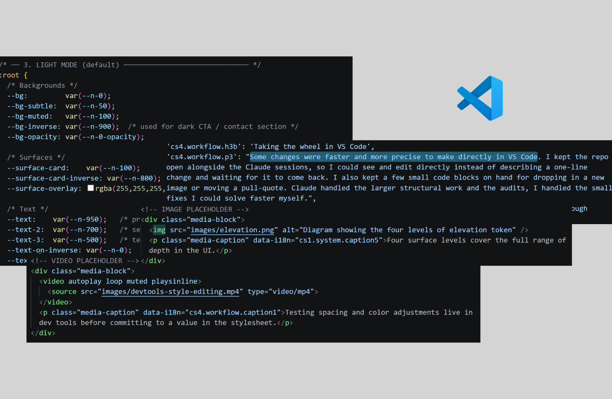
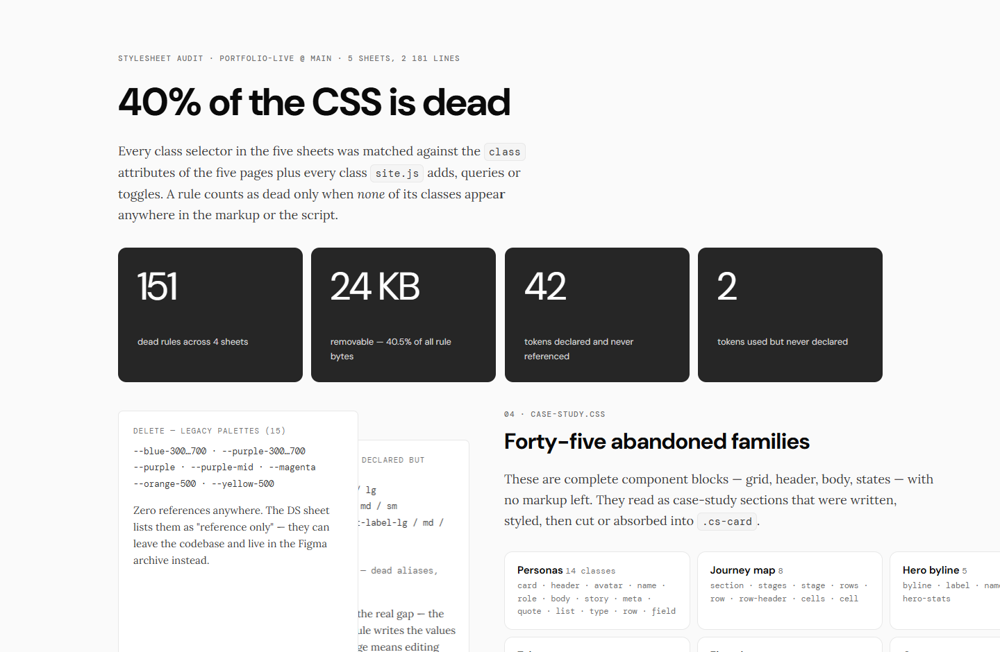

I wanted this portfolio well designed, well built, and published by me, so I used Claude as a working partner to draft layouts, write code, and run the GitHub publish flow. The result: a live, bilingual portfolio with two themes (light/dark) and a versioned release history. This case study is about that process.
Designing and building the portfolio
When I started this project, I had a job search to run and no front-end team to hand designs off to. Every other case study in this portfolio is about a product I designed while engineering built it. This one is different: for the first time, I'm also responsible for the code, the repo, and the deploy.
I decided to start bringing AI into my workflow with Claude, giving it the design direction, the copy, the priorities, and the final call on what ships. Claude writes and edits the HTML, CSS, and JS at scale. And as a designer who can read and edit code, I direct that relationship without giving up ownership of the outcome.
This case study was drafted the same way the rest of the site was built. It went through the same back-and-forth between direction and execution, reviewed and adjusted before it shipped.
The work begins after the first draft
Getting Claude to produce a working page is the easy part. The problem is everything that comes after the first draft. In each iteration I had to keep the visual system consistent across six pages built in separate sessions, catch copy that drifted from my actual voice, and get changes from my working files onto a live site without breaking it.
There was also the matter of keeping the design system in the repo synced with the one in Figma. Every token or component change in the code meant going back to Figma to mirror it, and that back-and-forth got slower as the site grew. I ended up solving it by replacing Figma with Claude Design and the design.md file.
The loop: draft, inspect, adjust, ship
The workflow settled into a repeatable loop over several sessions. I'd describe the goal and constraints, review what Claude produced against the actual rendered page, make the calls only I could make, and only then treat a change as done.
Prompting like writing a user story
Prompting for Claude turned out to be close to writing a user story with acceptance criteria, something I've written for years working with engineering teams. I started using a loose version of the Ask, Requirements, Context, Examples framework. I'd state the ask plainly, list what has to stay consistent, name the existing pattern to match, and point to an example that already exists.
Prototyping fast, testing in dev tools
I used the browser's dev tools constantly. I inspected elements, looked up the actual CSS class names so I could ask for specific changes, nudged a padding or line-height value live to test what felt right before asking for the change to be made properly in the file, and checked dark mode and mobile breakpoints by hand.
Testing spacing and color adjustments live in dev tools before committing to a value in the stylesheet.
Taking the wheel in VS Code
Some changes were faster and more precise to make directly in VS Code. I kept the repo open alongside the Claude sessions, so I could see and edit directly instead of describing a one-line change and waiting for it to come back. I also kept a few small code blocks on hand for dropping in a new image or moving a pull-quote. Claude handled the larger structural work and the audits, I handled the small fixes I could solve faster myself.

A direct edit to a token value in VS Code, faster than a round trip through conversation for a one-line fix.
One private repo, one public one
I split the site into two repositories. A dev repo (private) handles day-to-day iteration, with a full commit history plus two reference files, session-context.md logging decisions session to session and design.md documenting the system. A live repo (public) only ever receives clean releases. To publish, I follow the same sequence every time. I copy the finished files (excluding those dev-only files) into the live repo, commit with a version message, tag it, and push.
Keeping those two repos separate has a simple reason behind it. The dev repo's commit history let me trace changes, experiment freely, and keep anything covered by an NDA from ever ending up in a public commit. Every push to the live repo was something I'd already reviewed and versioned.
When Claude over-delivers
Not every session followed the loop cleanly. Left with a loosely scoped request, Claude tends to generate something new: a fresh class where an existing token would already do, a component variant nobody asked for. The results reminded me of when I was a junior graphic designer, wanting to show off every trick I knew, when the better move is using just what's needed, less is more. Tightening the Ask and Requirements steps helped, but wasn't enough. After a few iterations, I improved the results by adding design.md as a reference, so Claude would check every existing token and pattern there instead of drifting session to session.
The design system's evolution: from Figma to CSS audited in production
I started the design system in Figma, the way I would in my usual design workflow, but this time connecting it to Claude through MCP. I'd given Claude a few reference sites and some instructions to generate the design system from scratch. The results weren't bad, but going from Figma to CSS meant every change needed a back-and-forth between the two to keep them in sync. That got slow and tedious. Partway through, I stopped going back to Figma for corrections. It was faster to test a change live in dev tools and edit the token or component's CSS directly.
For this new workflow, I needed a way to document the design system and keep it up to date. I used Claude Design, asked it to generate a design system from the repository, and it built one from scratch instantly, with great results. The problem was I didn't know how to connect it back to Claude, so I ran into the same issue again. The fix was generating design.md from that design system. Now every token and pattern is listed there and used by Claude as a reference, instead of re-explaining the system from scratch each session.
Auditing the CSS instead of guessing what was safe to delete
By the time the site had six pages, five stylesheets, and was ready to publish, I asked Claude to audit the repository for dead CSS.
The audit found that 151 of 281 classes in the site's CSS were unused, more than half. They weren't just orphaned classes either: some were variants of others, some were leftovers from components I'd tried and dropped, and some were styles that had been used once and later replaced by a token. The audit let me leave the CSS lighter and easier to maintain.

The categorized audit report: dead code approved for deletion, intentionally retired code kept for reference, and a small set held back for a future decision.
A live, versioned, bilingual portfolio I can keep iterating on
The site is live on a custom domain, built and maintained through the workflow described above. Every change I make goes through the review-and-publish loop, and every release is versioned on GitHub.
- It's fully responsive, bilingual, and supports light and dark modes.
- A full CSS audit removed 151 dead classes and cut the largest stylesheet by roughly a third.
-
A new dev-to-live publish flow with tagged releases, plus
session-context.mdanddesign.mdtracking decisions on the dev side, means every version of the site is documented.
What this project taught me
Adding AI to my workflow meant every design decision and code change had to go through my review and approval. My role shifted from creator/designer to more of an editor/director.
Dev tools became a fast prototyping tool. Testing changes live and adjusting style values directly was faster and more precise than describing a change and waiting for Claude to get it right.
The design system built in Claude Design and the design.md file became the main reference for Claude. Figma started fading into the workflow, I stopped using it as the source of truth, but I imagine I'll keep using it to explore new design concepts more freely, or to generate new assets.
Generating a design system from scratch used to mean long hours setting up the foundation (defining grid values, writing every color variable in hex, tokens, hierarchies, and so on). With AI, all that heavy lifting gets skipped in minutes, with very good results.
My next step would be exploring a real component library, something like Storybook, instead of design.md. I'd like to see if I can keep the same design consistency and improve execution speed, but with a more robust, documented component system.